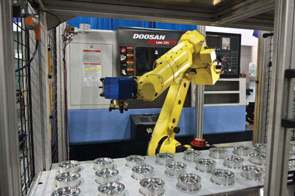
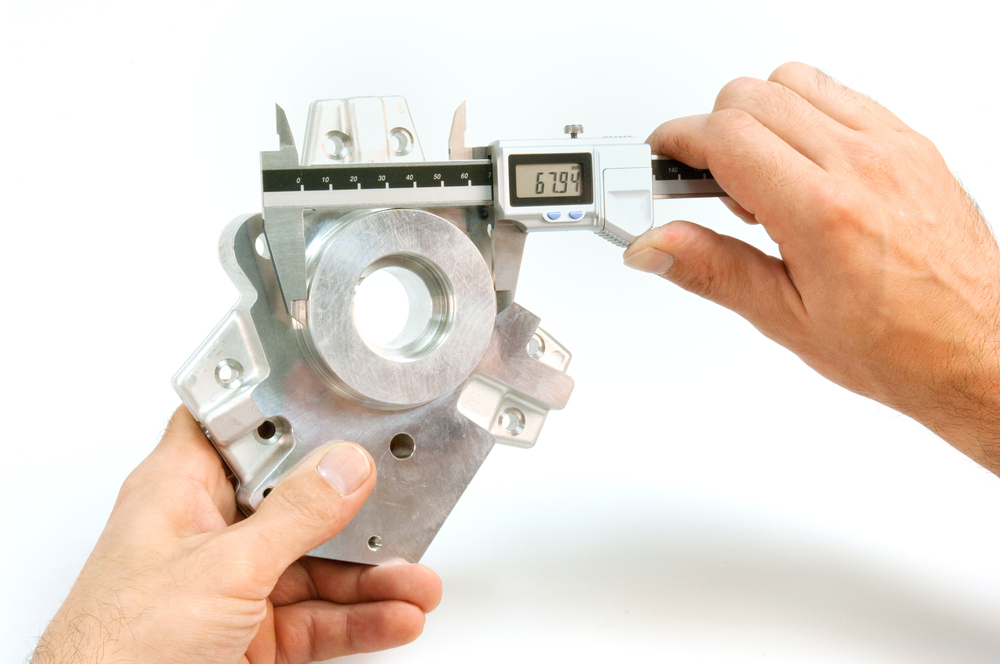

SCO 3001 Operations Tour Project
Quality Management

Graco has recently made some multi-million dollar capital investments in Mazak Robotic Arms. This is to prevent quality fatigue for repetitive, tedious jobs that no one else wants to do. For instance, these robotic arms are able to consistently apply a certain torque on a bolt much faster than a human. Graco expects that the average robotic arm takes about 2.5 years to pay for itself.

In order to maintain high quality standards, Graco also has an in-house calibration division. Their job is to standardize all measurements. What is cool about Graco is that they also make some of their own calibration tools since their equipment/products is so specialized.
Graco employees are responsible for "on-spot" inspection for their own work. This improves worker accountability while also minimizing total inspection time. Several of the robot arms at Graco also have inspection capabilities. One robot that makes small piston-pumps tests each one at the end and discards the ones that don't pass. The tour guide said they are planning on adding some optical sensors to robots to add another layer of inspection.

As another quality measure, Graco has numerous whiteboards and TV's around the plant floor displaying reminders to employees. These reminders could be general best-practices, or specific issues to watch out for that occured during the prior shift.